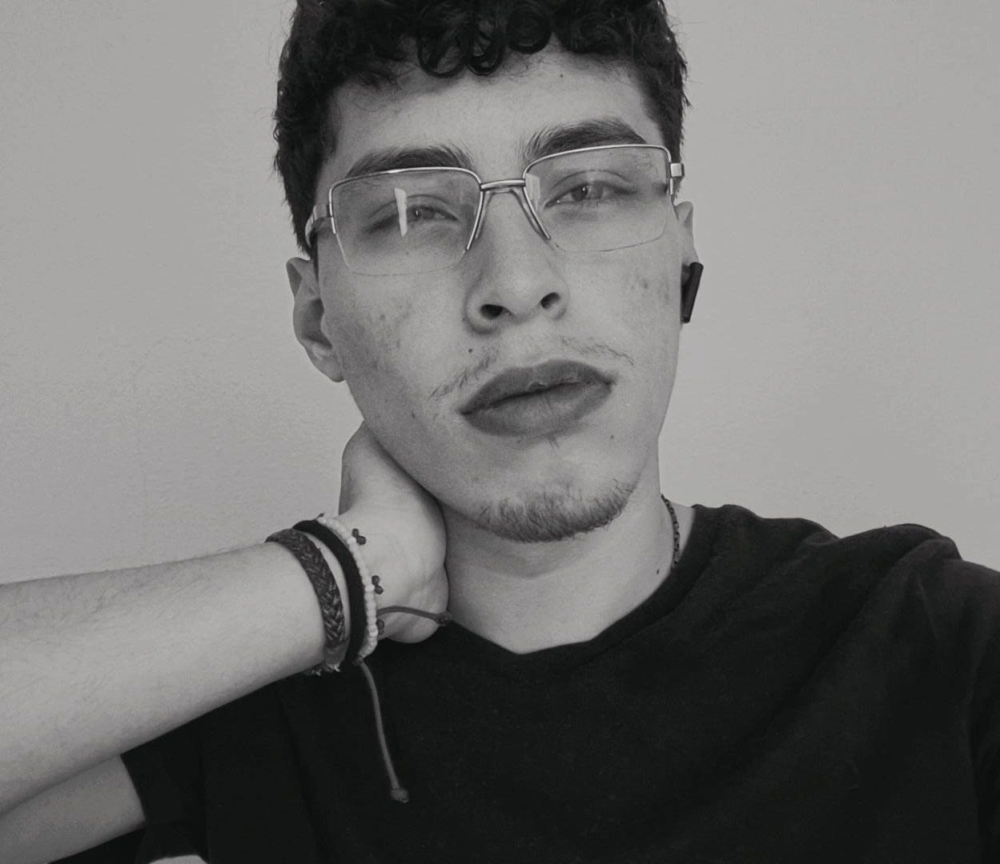

daniel.guerravivar@galileo.edu
26010539
54975384
Español:
Idioma nativo
Inglés: B2
Intermedio
Técnico en uso de Adobe Photoshop
Contabilidades Guerra - Mixco, Guatemala
10/2021 - Actual
Colegio Bilingue San Juan Mixco, Guatemala - 2021
Bachiller en Ciencias y Letras
con Orientación en Computación
Universidad Galileo - Guatemala, Guatemala 01/2026 - En proceso
Técnico en Desarrollo de Software